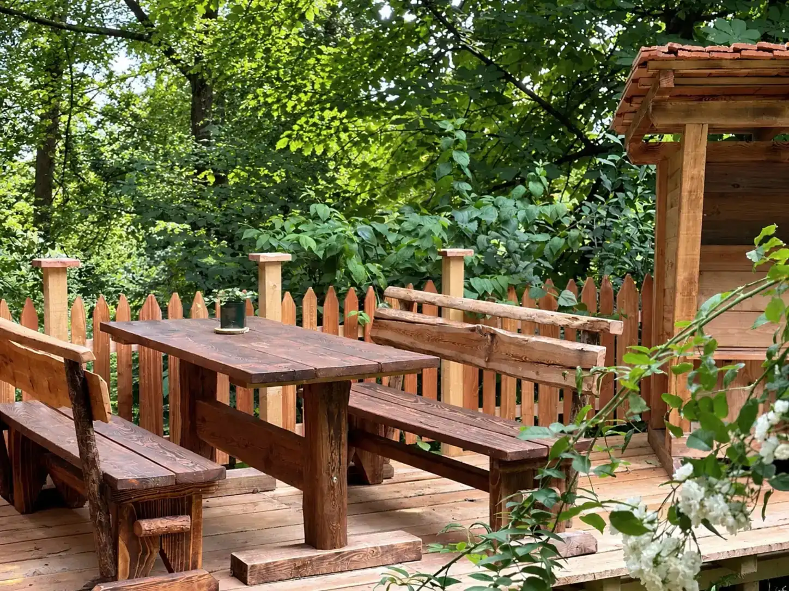
Frühstücksbuffet & Kuchen im Wiehengebirge
Kleine Auszeit am Waldrand: im alten Fachwerkhaus in Hüllhorst, direkt am Wittekindsweg.
- Geöffnet
- Sa + So 10–18 Uhr
- Frühstück
- Buffet 10–13 Uhr
- Adresse
- Bergstraße 141, Hüllhorst
- Telefon
- 05744 4087
„Komm als Gast und geh als Freund.“
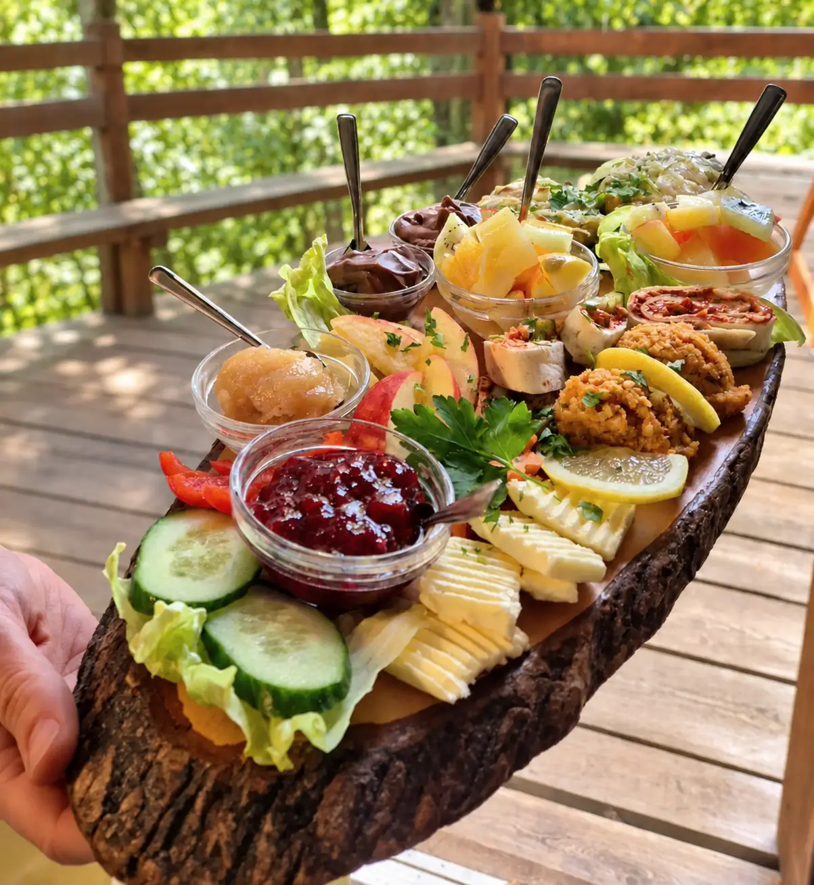
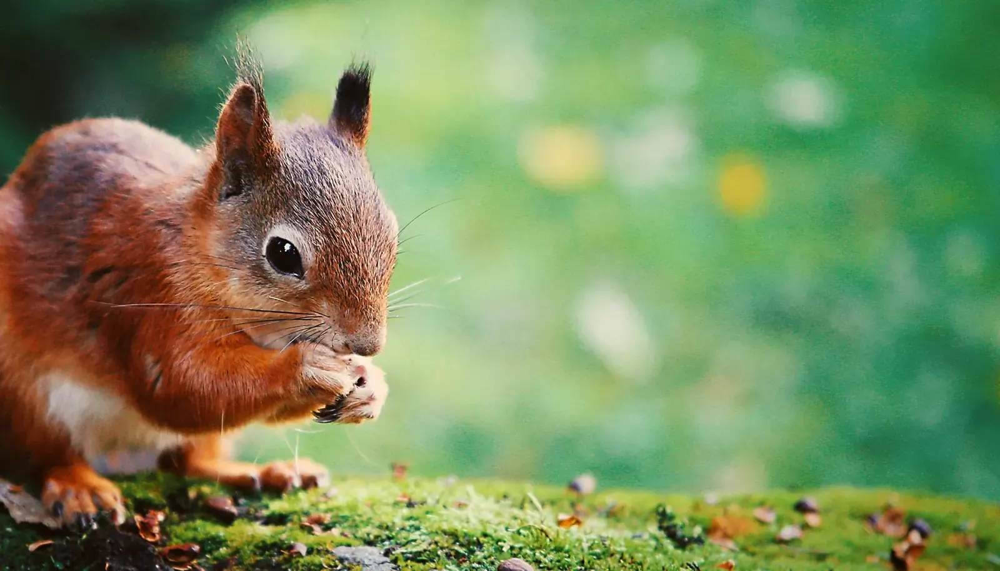
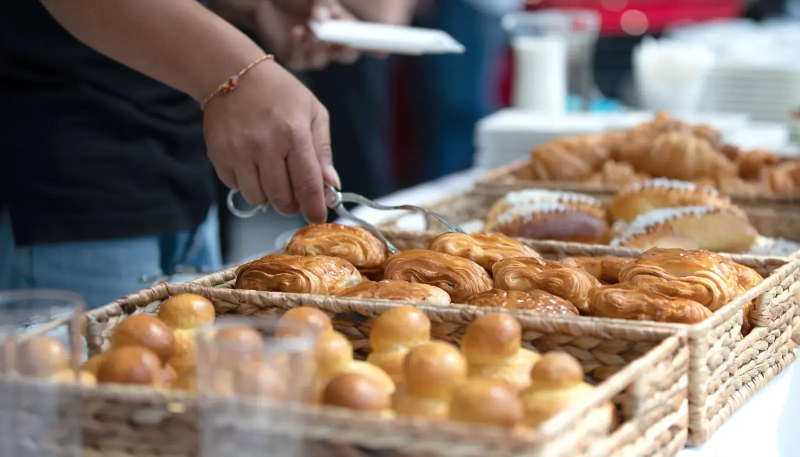
Willkommen im Café Waldkristall
Das Café Waldkristall lädt Dich zu einer ganz besonderen Auszeit am Waldrand ein – fernab vom Alltag, mitten in der Natur.
Hier treffen frische, liebevoll zubereitete Gerichte auf den rustikalen Charme eines alten Fachwerkhauses und die wohltuende Ruhe des Waldes. Lass Deinen Gaumen verwöhnen, gönn Deiner Seele eine Pause und genieß einfach den Moment – und den Ausblick.
Bei uns ist jeder willkommen – ob jung oder alt, mit oder ohne Instrument, auf zwei oder vier Beinen. Komm einfach vorbei, mach’s Dir gemütlich – wir freuen uns sehr auf Dich!
Deine Ulrike Lohrmann
Inhaberin Café Waldkristall
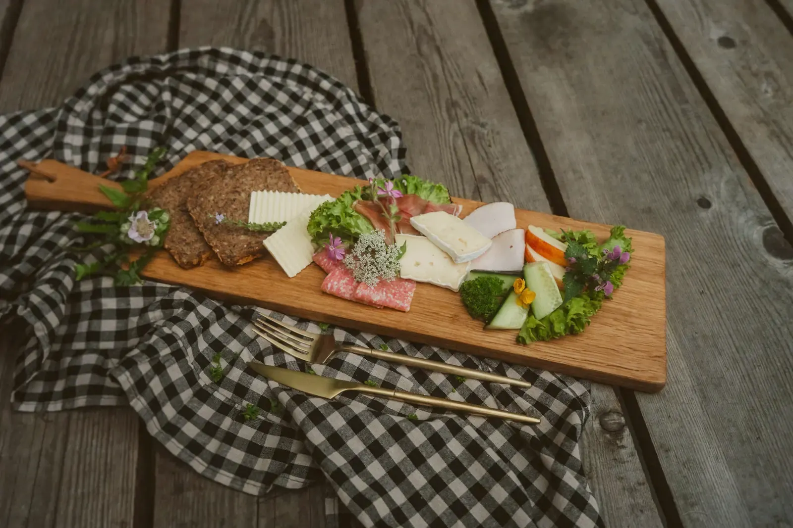
Frühstücksbuffet am Samstag und Sonntag
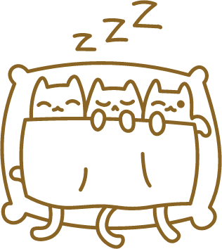
Perfekt für Langschläfer: Samstags und sonntags sind wir von 10 bis 18 Uhr für Dich da. Unser reichhaltiges Frühstücksbuffet erwartet Dich an beiden Tagen von 10 bis 13 Uhr.
Brötchen vom Natur-Bäcker, hausgebackenes Dinkelbrot, hausgemachte Fruchtaufstriche, Imkerhonig, Rührei, Lachs und Forelle, Salate der Saison und vieles mehr.
Frühstück pro Person, inkl. MwSt., ohne Getränke. Gerne servieren wir Kaffeespezialitäten, Tee, Kakao und kalte Getränke à la carte.
Ehrlich, hausgemacht und ohne Schnickschnack
Wir lieben gutes Essen – ehrlich, hausgemacht und ohne Schnickschnack. Unsere Zutaten kommen aus der Region, unsere Rezepte direkt aus der Seele.
Bei uns findest Du Leckereien ohne Geschmacksverstärker, Zusätze oder unnötige Hilfsmittelchen – dafür aber mit jeder Menge Liebe. Und: Wir verzichten ganz bewusst auf Weizenmehl und backen ausschließlich mit Dinkelmehl der Porta Mühle aus Minden.
Du hast Fragen zu Zutaten, Unverträglichkeiten oder möchtest einfach ein bisschen schnacken? Sprich uns gerne an!
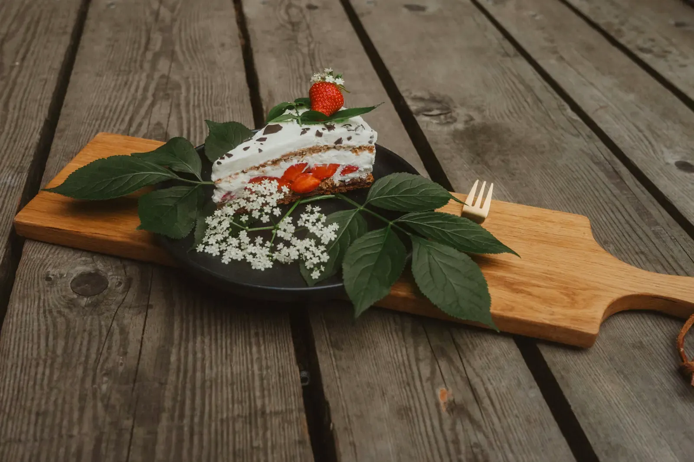
Kaffee & Kuchen – mit einer Prise Kindheit
Selbstgebacken und handverlesen: Kuchen, Torten, Waffeln und feines Gebäck, dazu Kaffee und Tee in bester Bioqualität.
Zur Kuchenkarte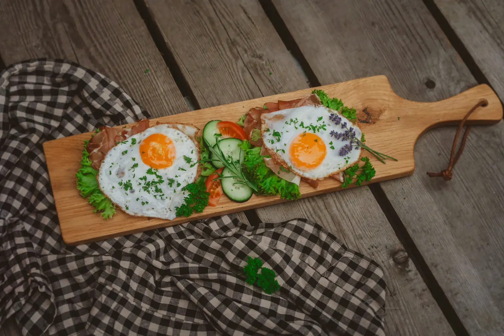
Herzhaftes aus der Waldküche
Von liebevoll zubereiteten Snacks bis zu wechselnden Tagesgerichten. Frag uns einfach, was heute auf dem Herd steht!
Zur Speisekarte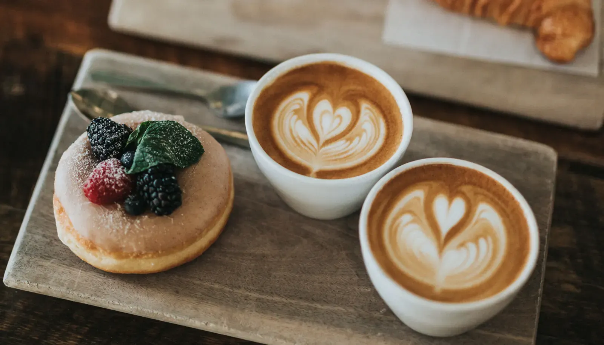
Verschenke eine Auszeit
Ob für Freundinnen, Familie oder Kolleginnen: Mit einem Gutschein verschenkst Du eine Portion Ruhe, Genuss und ganz viel Herz.
Gutschein bestellenFeiern im Café Waldkristall
Für Familienfeiern, Hochzeiten, Jubiläen und geschlossene Gesellschaften von 20 bis 50 Personen öffnen wir nach Absprache auch außerhalb unserer regulären Öffnungszeiten.
- Gruppen von 20 bis 50 Personen
- Drinnen bis zu 50 Gäste, bei gutem Wetter wird draußen weitergefeiert
- Schreib uns oder ruf uns an, dann planen wir gemeinsam Deinen Wunschtermin
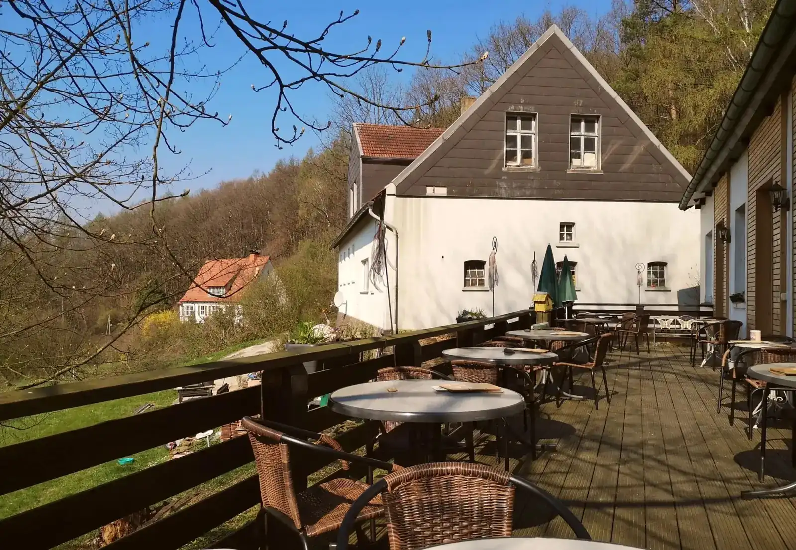
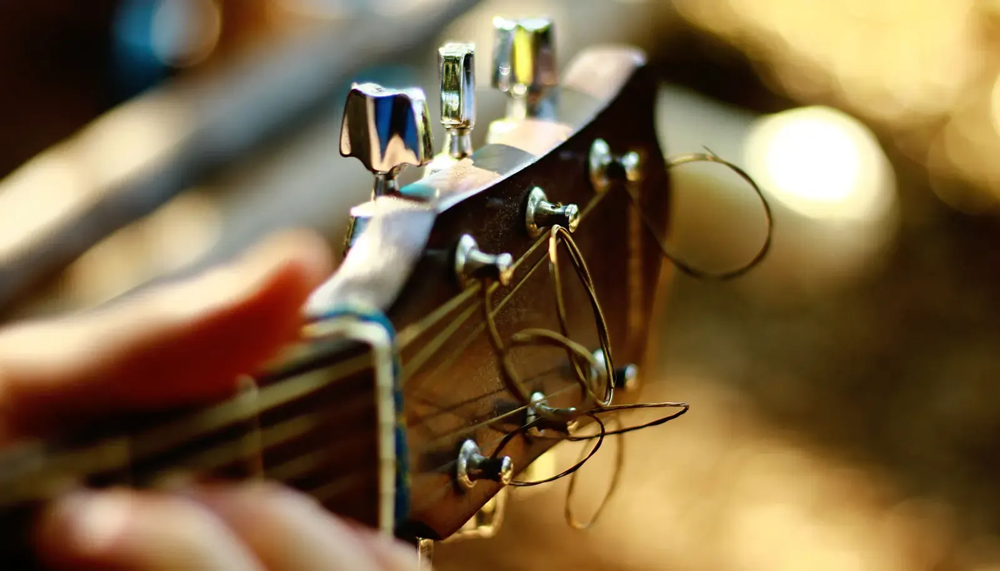
Livemusik, Yoga & Workshops
Im Café Waldkristall bist Du nicht einfach nur Gast – Du bist Teil der Gemeinschaft. Regelmäßig verwandeln Musiker aus aller Welt unser Café in einen kleinen, gemütlichen Konzertsaal mit Wohnzimmer-Charme.
Dazu finden in unseren gemütlichen Räumlichkeiten regelmäßig Kurse und Workshops statt – Yoga und mehr, mit tollen Partnern. Und unser Seminarraum steht auch Dir offen.
Mitten im Wiehengebirge, direkt am Wittekindsweg
Suchst Du einen Ort, der Dich runterbringt und inspiriert? Dann schnapp Dir bequeme Schuhe, mach einen Spaziergang durchs Wiehengebirge und komm anschließend bei uns vorbei – mitten auf dem Wiehenkamm, direkt am Wittekindsweg.
Hier erwartet Dich nicht nur ein herrlicher Ausblick, sondern auch jede Menge Wohlfühlmomente: leckere Speisen, ein warmes Getränk, ein Lächeln – und ganz viel Natur ringsum. Ein echtes Seelenplätzchen für Naturliebhaber – und vielleicht auch für Dich?
Knöllchen-Allergie? Dann haben wir einen kleinen, aber feinen Tipp für Dich: Bitte nutze einen unserer 3 ausgewiesenen Parkplätze … denn wer weiß schon, wann die Waldhexe wieder unterwegs ist 😉
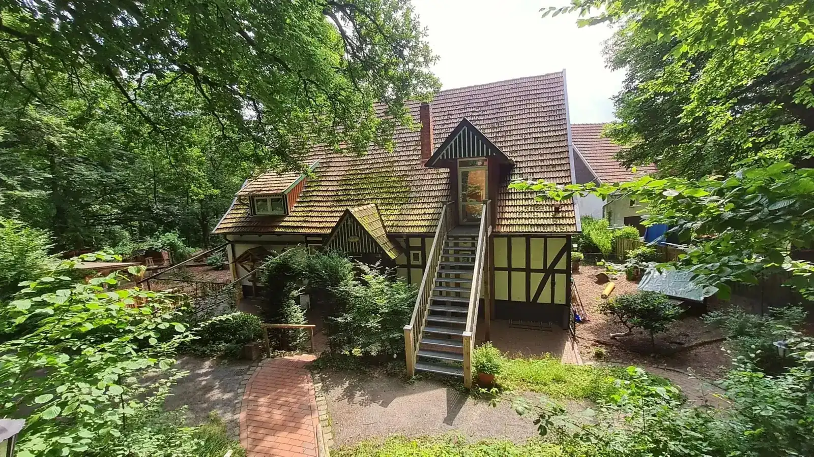
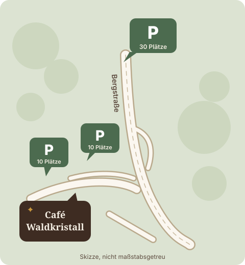
Verschenke eine Auszeit
Eine kleine Pause vom Alltag ist manchmal das schönste Geschenk. Ob für Freundinnen, Familie oder Kolleginnen: Mit einem Gutschein vom Café Waldkristall verschenkst Du eine Portion Ruhe, Genuss und ganz viel Herz.
Bestell Deinen Gutschein einfach über das Formular, er wird Dir automatisch per E-Mail geschickt.
Arbeite mit uns am Waldrand
Du hast Erfahrung in der Gastronomie und suchst eine neue Herausforderung – am liebsten in einem herzlichen Team und mitten in der Natur? Dann bist Du bei uns genau richtig!
Aktuell suchen wir: Servicefachkraft (m/w/d) in Teilzeit (20 Std.) · Hauswirtschaftliche Kraft (m/w/d) in Teilzeit
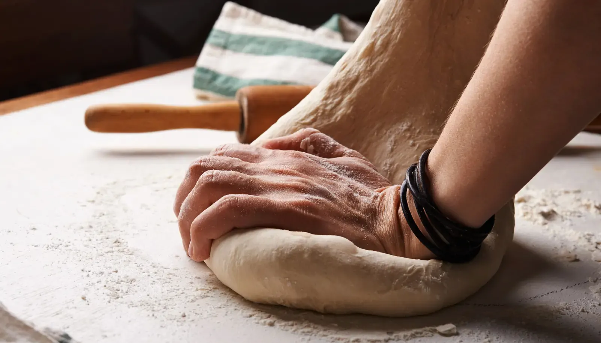
Häufige Fragen
Kurze Antworten auf das, was Gäste uns am häufigsten fragen.
Noch etwas offen? Ruf uns an: 05744 4087
Wann hat das Café Waldkristall geöffnet?
Samstags und sonntags von 10 bis 18 Uhr. Das Frühstücksbuffet gibt es an beiden Tagen von 10 bis 13 Uhr. Montag bis Freitag ist geschlossen, außer für Feiern nach Absprache.
Was kostet das Frühstücksbuffet?
25,50 € für Erwachsene und 9,00 € für Kinder von 3 bis 13 Jahren, inkl. MwSt., ohne Getränke. Kaffee, Tee und Saft bestellst Du à la carte dazu.
Wie reserviere ich einen Tisch?
Online über den Button „Tisch reservieren“ oder telefonisch unter 05744 4087. Gruppen ab 9 Personen reservieren bitte per Telefon oder E-Mail an info@cafe-waldkristall.de.
Gibt es vegane oder vegetarische Speisen?
Ja. Auf dem Buffet stehen zum Beispiel vegane Fruchtaufstriche, Linsenfrikadellen und eine vegane Gemüsesuppe. Wir backen ohne Weizenmehl, nur mit Dinkelmehl der Porta Mühle. Bei Unverträglichkeiten sprich uns einfach an.
Wo kann ich parken?
An der Bergstraße gibt es 3 ausgewiesene Parkplätze mit zusammen rund 50 Plätzen. Zu Fuß erreichst Du uns direkt über den Wittekindsweg.
Kann ich im Café Waldkristall feiern oder heiraten?
Ja. Familienfeiern, Hochzeiten und Jubiläen mit 20 bis 50 Gästen, nach Absprache auch außerhalb der Öffnungszeiten. Bei gutem Wetter feiert Ihr auf der Terrasse und im Garten weiter.
Gibt es Gutscheine?
Ja. Du bestellst den Gutschein online, er kommt automatisch per E-Mail zu Dir.
Darf ich meinen Hund mitbringen?
Ja, Gäste auf vier Beinen sind bei uns willkommen. Bitte führe Deinen Hund an der Leine.
Komm als Gast und geh als Freund.
Café Waldkristall
Inhaberin Ulrike Lohrmann
Bergstraße 141
32609 Hüllhorst-Schnathorst
05744 4087
info@cafe-waldkristall.de
Tisch reservierenFeier anfragen
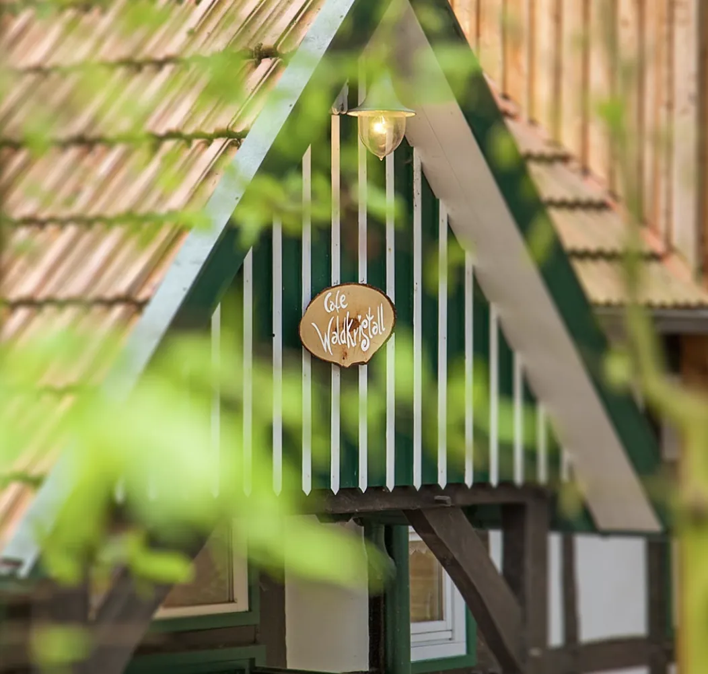
Öffnungszeiten
| Samstag | 10–18 Uhr |
| Sonntag | 10–18 Uhr |
| Frühstücksbuffet | 10–13 Uhr |
| Montag bis Freitag | Geschlossen |
Für Feiern ab 20 Personen öffnen wir nach Absprache auch außerhalb dieser Zeiten.